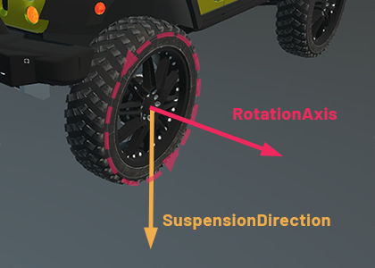

Vehicle Physics
The car model is based on Real Car New made by Maker Game Studios
Is it possible to simulate physical vehicles by using a standard Rigid Body and applying several components to set the Vehicle behavior. This is a simplified vehicle physic model. Instead of simulation each wheel and chassis as separate rigid bodies, connected by joints, it uses a simplified model.
The entire vehicle is represented as a single Rigid Body, the chassis. The collision detection of the wheels is approximated using ray-casting, and the tire friction is a basic anisotropic friction model.
To start using Physic vehicles in Evergine, we need to use two components:
- PhysicVehicle3D: Add this component to the chassis rigid body that we want to turn into a vehicle.
- PhysicWheel3D: Add this component to each entity that you want to act as a wheel for a vehicle.
PhysicVehicle3D
In Evergine, a vehicle is implemented using the PhysicVehicle3D component.

General vehicle properties
| Property | Default | Description |
|---|---|---|
| SuspensionStiffness | 20 | Suspension stiffness is a measure of how much force is required to compress the suspension of a vehicle. |
| SuspensionCompression | 4.4 | This property determines how much the suspension will compress when the wheel hits a bump or obstacle. |
| SuspensionCompression | 2.3 | This property determines the rate at which the suspension spring will compress and rebound. It controls the amount of damping force that is applied to the suspension when the vehicle encounters bumps or uneven terrain. |
| MaxSuspensionTravel | 5.0 | It represents the maximum distance that the suspension can be compressed or extended. It is measured in units of length. |
| FrictionSlip | 1000 | It refers to the amount of slip that occurs between the tire and the ground during motion. Friction slip is typically modeled using a friction coefficient that represents the ratio of the tangential force to the normal force between the tire and the ground. This coefficient can be adjusted to simulate different levels of slip and traction for different types of vehicles and surfaces. |
| MaxSuspensionForce | 6000 | Specifies the maximum force that the suspension can apply to the chassis of the vehicle. It is used to limit the effect of the suspension when it is compressed or stretched, preventing the vehicle from bouncing too much or losing stability. |
Control the vehicle
Using the following methods you can control your vehicle:
| Method | Description |
|---|---|
| ApplyEngineForce(force) | This method is used to apply the engine force that will be applied to the vehicle. This can be adjusted to increase or decrease the speed of the vehicle, and it can be set to a negative value to go backwards. The engine force will be applied only to the drive wheels. |
| SetSteeringValue(steering) | This method is used to set the steering angle of the vehicle. Use this method to change the vehicle direction. The steering value is only applied to steerable wheels. |
| SetBrake(brake) | Indicates the brake force applied by the vehicle. The steering value is only applied to brakable wheels. |
PhysicWheel3D
In Evergine, a wheel is implemented using the PhysicWheel3D component.

Vehicle attachment Properties
First of all, it's necessary to indicate how which vehicle entity the wheel will be associated.
| Property | Default | Description |
|---|---|---|
| SearchVehicle | FromParents |
Indicates the strategy to search the associated vehicle:
|
| PhysicVehicleEntityPath | null |
Indicates the Entity Path of the vehicle entity. |
Wheel Axis Properties
The following properties helps to define how the wheel directions of suspension and rotation among other things
| Property | Default | Description |
|---|---|---|
| WheelRadius | 0.5 | Determines the wheel radius. The WheelRadius value can be used in two ways:
|
| RotationAxis | 1, 0, 0 | The RotationAxis property is used to define the axis around which the wheel rotates. It also indicates the advance direction when applying engine force. It is specified in the local space of the wheel entity. |
| SuspensionDirection | 0, -1, 0 | Indicates the direction in which the wheel's suspension operates. It also defines the steering wheel direction. It is specified in the local space of the wheel entity. |
| SuspensionRestLength | 0.2 | Defines the length of the wheel's suspension when the vehicle is in its resting position. |

Flags Properties
In the following properties you can specify how the wheel will be used in the car (steerable, breakable, etc...)
| Property | Default | Description |
|---|---|---|
| IsFrontWheel | false |
It indicates if this is a front wheel or not. This property, in combination with others, helps to define the behavior of the wheel. For example, a steerable wheel which is not a front wheel will be steered in the opposite direction that a front wheel. |
| IsSteerableWheel | false |
If true, the wheel will be affected by the vehicle steering values. |
| IsDriveWheel | true |
If true, the wheel will be affected by engine force. |
| IsBrakableWheel | true |
Determine if the wheel is able to brake or not. |
With the above properties, you can define different types of vehicles (4x4, font-wheel-drive, etc.)
Controlling the wheel individually
Above we described how to control your vehicle using a sets of methods to control the general steering, brake and engine force values of the vehicle.
You can also avoid to use this methods and set individually these properties to the wheel directly. This allows you to set different values to each wheel (different steering values per wheel for example).
| Property | Description |
|---|---|
| Steering | Indicates the steering angle of this wheel. |
| EngineForce | The force applied by the engine to this wheel. |
| Brake | The brake force acting to this wheel. |
Overriding vehicle settings
As we mentioned before, the PhysicVehicle3D component defines a series of physical properties of the suspensions. By default, all of these properties are applied to all wheel equally, but you can override these properties and set your specific values.
| Property | Default | Description |
|---|---|---|
| OverrideVehicleSettings | false |
If true, this wheel will ignore the properties defined in the vehicle and will specify its own values. If false, the following property values will be ignored. |
| SuspensionStiffness | 20 | Suspension stiffness is a measure of how much force is required to compress the suspension of a vehicle. |
| SuspensionCompression | 4.4 | This property determines how much the suspension will compress when the wheel hits a bump or obstacle. |
| SuspensionCompression | 2.3 | This property determines the rate at which the suspension spring will compress and rebound. It controls the amount of damping force that is applied to the suspension when the vehicle encounters bumps or uneven terrain. |
| MaxSuspensionTravel | 5.0 | It represents the maximum distance that the suspension can be compressed or extended. It is measured in units of length. |
| FrictionSlip | 1000 | It refers to the amount of slip that occurs between the tire and the ground during motion. Friction slip is typically modeled using a friction coefficient that represents the ratio of the tangential force to the normal force between the tire and the ground. This coefficient can be adjusted to simulate different levels of slip and traction for different types of vehicles and surfaces. |
| MaxSuspensionForce | 6000 | Specifies the maximum force that the suspension can apply to the chassis of the vehicle. It is used to limit the effect of the suspension when it is compressed or stretched, preventing the vehicle from bouncing too much or losing stability. |
Using Physics Vehicles
In the following snippet we are going to create a simple vehicle and start controlling it.
Create the vehicle
protected override void CreateScene()
{
this.Managers.RenderManager.DebugLines = true;
// Load your material
var floorMaterial = this.Managers.AssetSceneManager.Load<Material>(EvergineContent.FloorMat);
var vehicleMaterial = this.Managers.AssetSceneManager.Load<Material>(DefaultResourcesIDs.DefaultMaterialID);
// Add a floor
var floor = new Entity()
.AddComponent(new Transform3D())
.AddComponent(new MaterialComponent() { Material = floorMaterial })
.AddComponent(new PlaneMesh() { Width = 20, Height = 20 })
.AddComponent(new MeshRenderer())
.AddComponent(new StaticBody3D())
.AddComponent(new BoxCollider3D())
;
// Create the vehicle entity
var vehicle = new Entity()
.AddComponent(new Transform3D() { LocalPosition = new Vector3(0, 2, 0) })
.AddComponent(new RigidBody3D()
{
Mass = 800, // 800Kg
})
.AddComponent(new PhysicVehicle3D());
// Create the chassis
var chassis = new Entity()
.AddComponent(new Transform3D() { LocalScale = new Vector3(1.8f, 1, 3) })
.AddComponent(new MaterialComponent() { Material = vehicleMaterial })
.AddComponent(new CubeMesh())
.AddComponent(new MeshRenderer())
.AddComponent(new BoxCollider3D());
vehicle.AddChild(chassis);
// Add Wheels
vehicle.AddChild(this.AddWheel( vehicleMaterial, new Vector3(1, -0.5f, 1.5f), true, true));
vehicle.AddChild(this.AddWheel(vehicleMaterial, new Vector3(-1, -0.5f, 1.5f), true, true));
vehicle.AddChild(this.AddWheel(vehicleMaterial, new Vector3(1, -0.5f, -1.5f), false, false));
vehicle.AddChild(this.AddWheel(vehicleMaterial, new Vector3(-1, -0.5f, -1.5f), false, false));
this.Managers.EntityManager.Add(floor);
this.Managers.EntityManager.Add(vehicle);
}
private Entity AddWheel(Material material, Vector3 position, bool isFront, bool isSteerable)
{
return new Entity()
.AddComponent(new Transform3D()
{
LocalPosition = position,
LocalRotation = new Vector3(0, 0, MathHelper.PiOver2) // Rotate the cylinder 90º
})
.AddComponent(new MaterialComponent() { Material = material })
.AddComponent(new CylinderMesh() { Height = 0.2f })
.AddComponent(new MeshRenderer())
.AddComponent(new PhysicWheel3D()
{
IsFrontWheel = isFront,
IsSteerableWheel = isSteerable,
RotationAxis = Vector3.UnitY,
SuspensionDirection = -Vector3.UnitX
});
}
Control the car!
We just need to add a simple custom behavior to start controlling the car:
First of all, create a custom Behavior, with the following code:
public class VehicleController : Behavior
{
[BindService]
private GraphicsContext graphicsContext;
[BindComponent]
private PhysicVehicle3D vehicle;
public float MaxForce = 1000; // Max Engine force
public float Brake = 20; // Max breke force
public float MaxSteering = MathHelper.ToRadians(35);
public float SteeringSmooth = 0.5f;
private float currentSteering = 0;
private float steeringVelocity = 0;
protected override void Update(TimeSpan gameTime)
{
var keyboard = this.Managers.RenderManager.ActiveCamera3D.Display.KeyboardDispatcher;
float engineForce = 0;
// If press the W or Up Arrow, move forward...
if ((keyboard.ReadKeyState(Keys.W) == ButtonState.Pressed) || (keyboard.ReadKeyState(Keys.Up) == ButtonState.Pressed))
{
engineForce = MaxForce;
}
// If press the S or Down Arrow, reverse direction...
else if ((keyboard.ReadKeyState(Keys.S) == ButtonState.Pressed) || (keyboard.ReadKeyState(Keys.Down) == ButtonState.Pressed))
{
engineForce = -MaxForce / 3;
}
// Apply the brake if we press the space bar
var brake = keyboard.ReadKeyState(Keys.Space) == ButtonState.Pressed ? Brake : 0;
// Sets the Steering value by aplying D,A or Left and Right Arrow...
var steeringRotation = 0f;
if ((keyboard.ReadKeyState(Keys.D) == ButtonState.Pressed) || (keyboard.ReadKeyState(Keys.Right) == ButtonState.Pressed))
{
steeringRotation = MaxSteering;
}
else if ((keyboard.ReadKeyState(Keys.A) == ButtonState.Pressed) || (keyboard.ReadKeyState(Keys.Left) == ButtonState.Pressed))
{
steeringRotation = -MaxSteering;
}
// Smooth the steering...
this.currentSteering = MathHelper.SmoothDamp(this.currentSteering, steeringRotation, ref this.steeringVelocity, this.SteeringSmooth, (float)gameTime.TotalSeconds);
// Apply the engine force, brake and steering values...
this.vehicle.ApplyEngineForce(engineForce);
this.vehicle.SetSteeringValue(this.currentSteering);
this.vehicle.SetBrake(brake);
}
}
Later, add this component to the vehicle entity created in the previous section:
vehicle.AddComponent(new VehicleController());